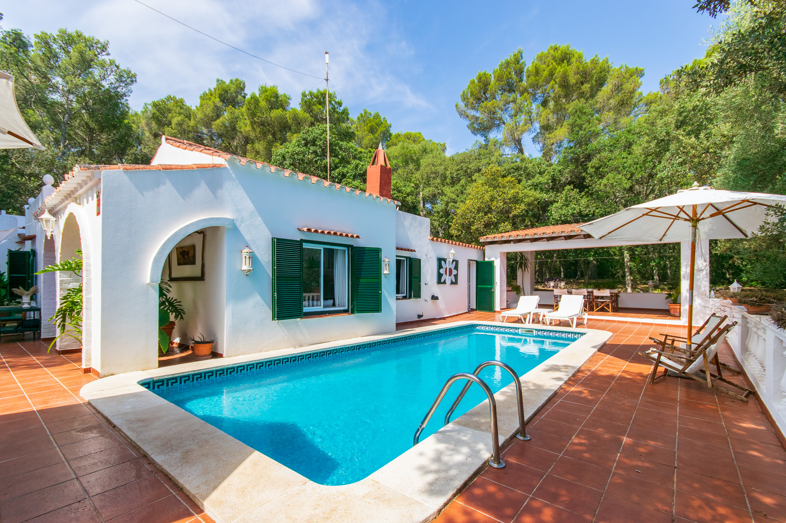

€585.000
Es Mercadal, carretera de Fornells · Menorca · Spain
Exact character brief at a bargain ask: whitewash with terracotta roof, arched porch, dark green shutters, vaulted salón with exposed beams, terracotta floors and a built private pool in a pine-private garden on 2,100 m². Habitable and finished (modern kitchen + old+new living). Only one bathroom — same flag as board twin-price `ses-mercadal-5672`, but this is a different finca (143/2100 vs 190/2000) and no Mercadal Fornells-road twin on the board.
Opened 15 Sep 2026. Asking 585.000 €. Ref T1930. 3 beds / 1 bath; 143 m² / 2.100 m² plot; private pool + porches; solar panels + rainwater tanks; fireplace; AC. Marketing: auténtica finca menorquina, carretera de Fornells / Es Mercadal. Photos verify arches, green shutters, beams, built pool — not rustico/fixer. Not Sa Caleta.
Open the listing